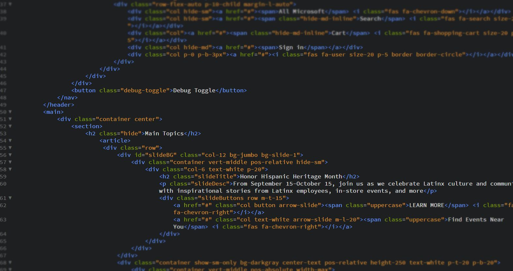

- atom 사용법
- html code
Code of html
1. 강조
<strong>과 </strong>를 쓴다.
strong
2. 밑줄
<u>와 </u>를 쓴다.
underline
3. 제목
<h1>부터 <h6>를 쓴다.
h3
4. 줄바꿈
<br>를 쓴다.
5. 문단
<p>와 </p>를 쓴다.
cf) p tag의 여백을 조절하고 싶을 때
<p style="margin-top:45px">를 추가하면 p tag 위쪽에 45px만큼의 여백이 생긴다.
6. 이미지 넣기
<img>를 사용한다. 이 태그는 속성 (attribute)가 필요함
<img src="html.jpg">를 통해 내 컴퓨터의 이미지를 첨부 가능하다.
소스에 외부 주소를 입력하면 외부 이미지도 활용 가능하다.
이미지의 크기는 width로 조정 가능하다.
ex) width="50%"

7. 목차
<li>를 사용한다.
목차를 다른 내용과 구분하기 위해 부모 태그로 <ul> 또는 <ol>를 사용한다.
ul은 순서가 없는 목차, ol은 순서가 있는 목차 태그에 사용한다.
ex) ul을 사용한 예
8. 문서의 구조 만들기
제목을 짓기 위해서는 <title>과 </title>를 사용한다.
UTF-8 설정을 위해서는 <meta charset="utf-8">를 사용한다.
본문과 본문을 설명하는 정보를 구분하기 위해 각각 <body>, </body>와 <head>, </head>를 사용한다.
그리고 body와 head 태그를 감싸기 위한 <html> 태그를 위에 추가하고 제일 위에 <!doctype html>를 더한다.
9. 링크 걸기
링크를 걸기 위해서는 <a>과 </a>를 사용한다.
<a href="https://www.w3schools.com/html/" target="_blank" title="html tutorial">html tutorial</a>
이런 식으로 사용한다.
ex) html tutorial